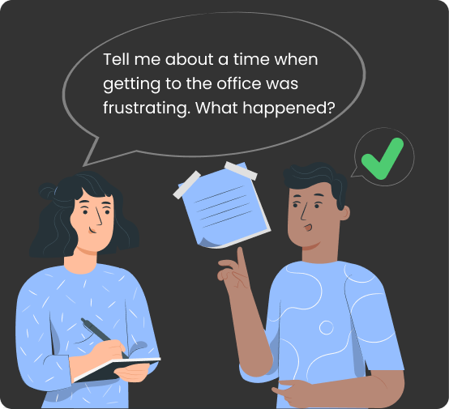

While I integrate my philosophies into non-unique processes, my designs keep the users front
and center.
DiscoverDefineIdeateDesign
Discover
“UX design is a solution for integrated user and business problems and goals. To discover what
problems
and goals I need to design for, I employ a variety of methods.”
Methods I use for discovery
User Research: I conduct in-depth investigation to understand user needs, behaviors, and pain
points.
User interview is the most common user research method I use for an initial design solution. I find
it a great tool for generating qualitative data from quantitative data.
My discovery process through user interviews include:
Planning
Conducting the Interview
Analyzing the Data
Applying Insights to Design
Here are best practices I use while conducting user interviews:
Conduct interviews in a neutral environment to make participants feel at ease.
Focus on open-ended questions to encourage participants to share their thoughts freely.
Include a diverse range of participants to capture a broader perspective.
Record the interviews (with consent) for accurate data analysis.
Be open-minded and avoid leading questions to minimize bias.

An example of a good UX interview questionAn example of a bad UX interview question
Competitive Analysis: I examine competitors to identify industry standards, trends, and
potential gaps.
Stakeholder Interviews: I also engage with key stakeholders to gather insights and align
project goals.


 Discover
Discover
 Define
Define
 Ideate
Ideate
 Design
Design